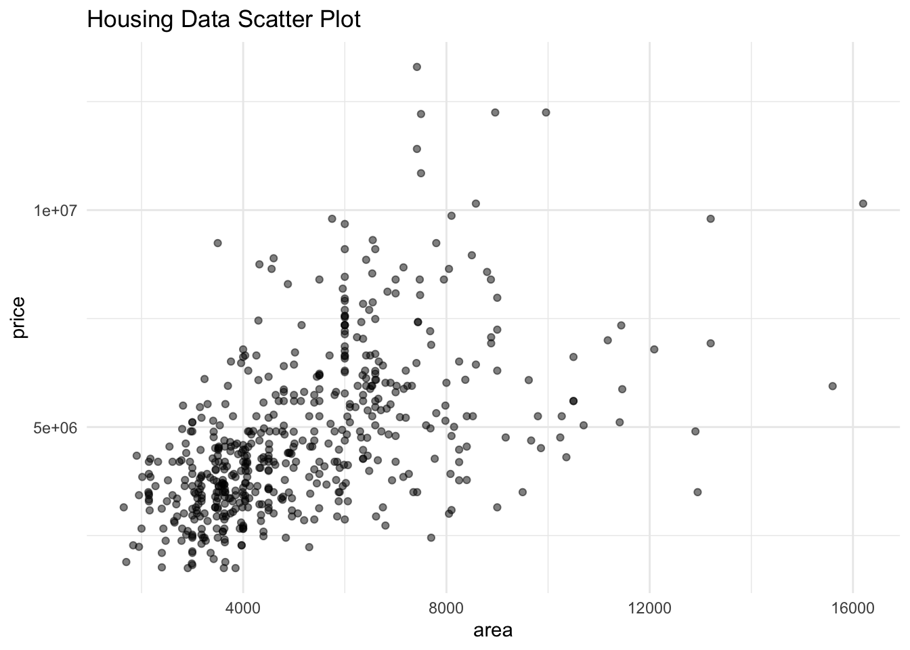
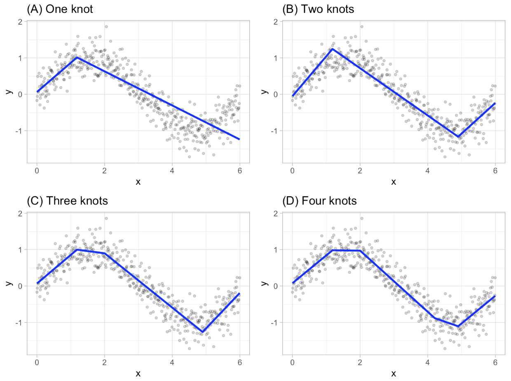
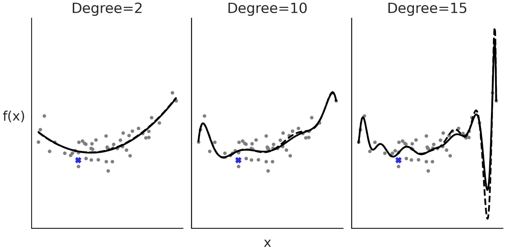
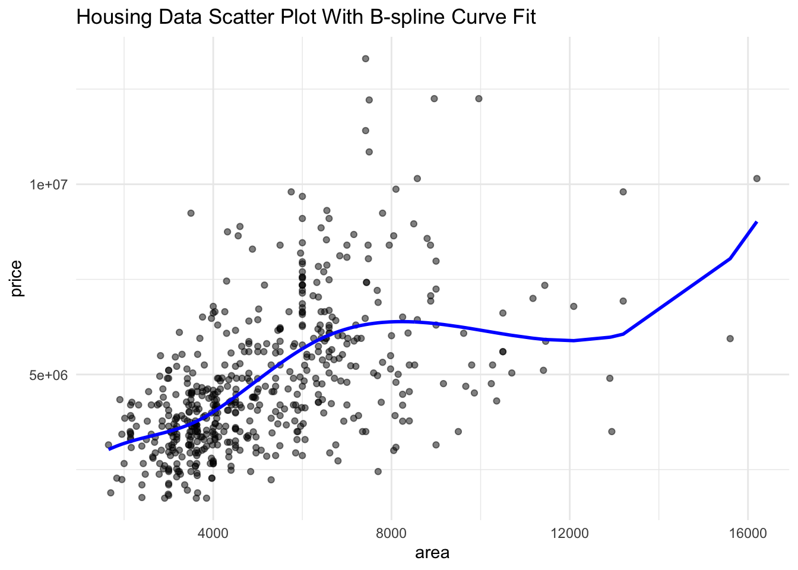
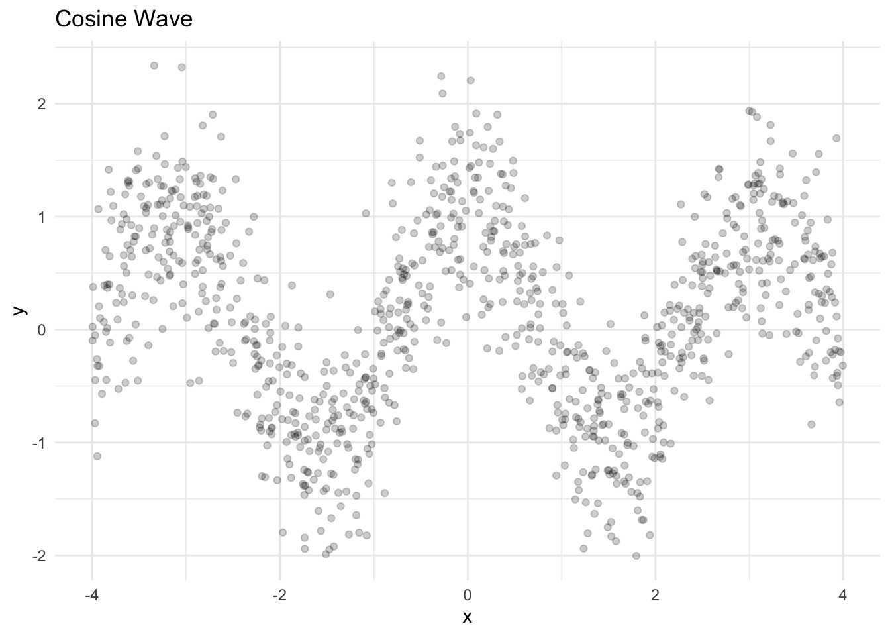
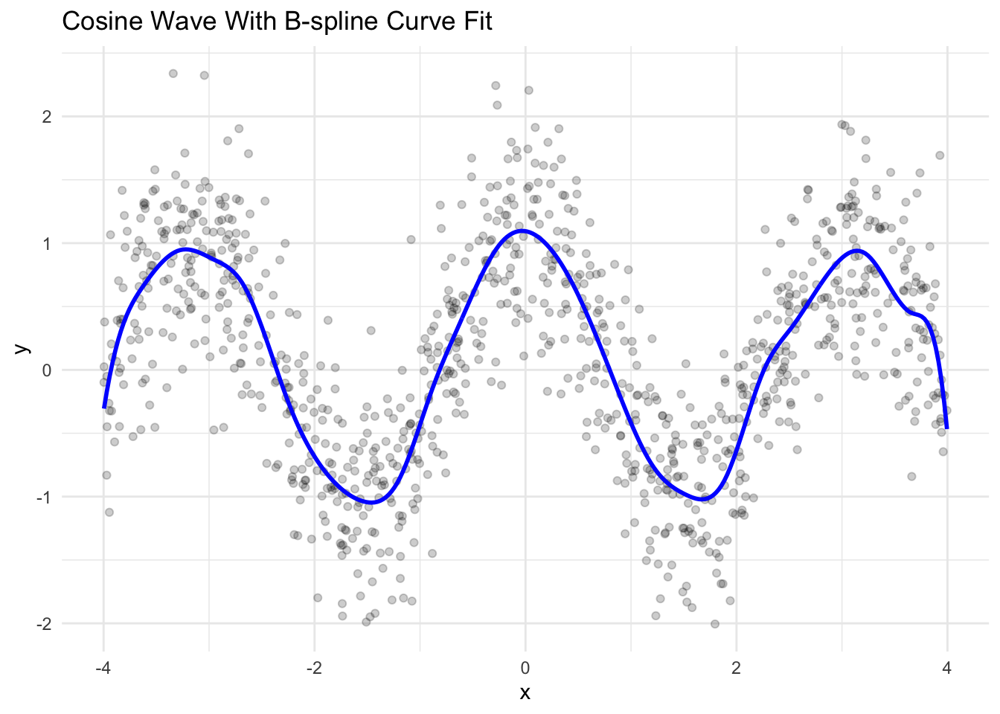
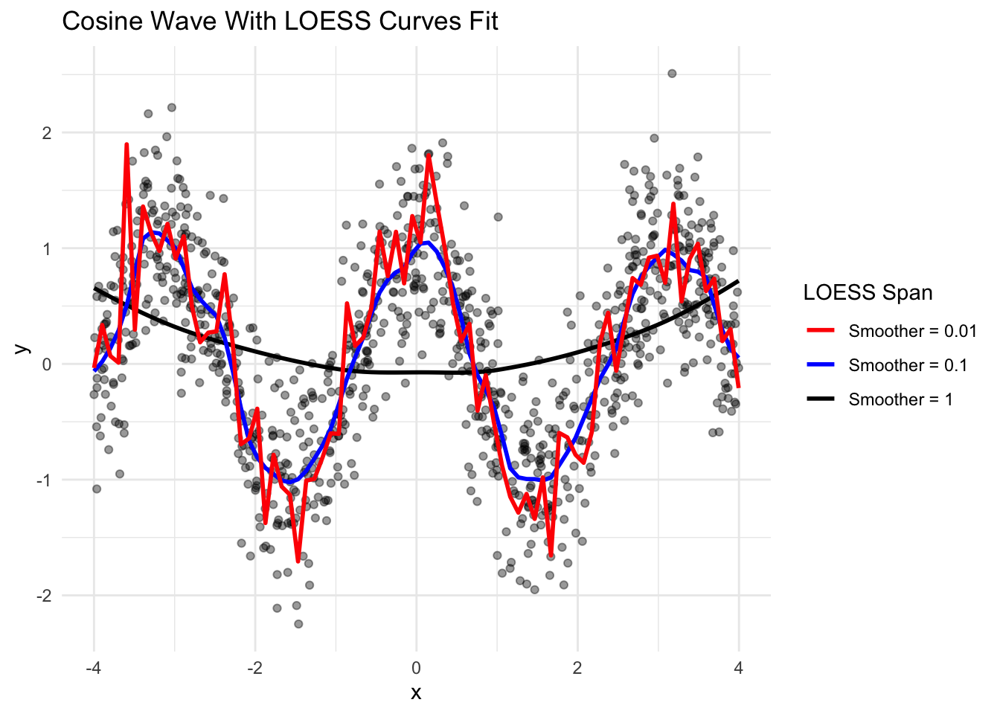

library(tidyverse)
housing <- read.csv("Housing.csv")
ggplot(data = housing, aes(x = area, y = price)) +
geom_point(alpha = 0.5) +
labs(
title = "Housing Data Scatter Plot"
)+
theme_minimal()
This user guide is going to go over how to use B-splines to smooth data working in the coding language R. Before we get started on that, lets talk about what splines are.
Splines are piecewise polynomials that are used to fit multiple small curves to follow the trend in data better than just one big curve can (Ken Koon Wong, 2025 n.d.). Data is split into different sections and given polynomials that fit the data for each section. The points that split the data up and where the small curves connect are called knots. Knots allow for a smooth transition from one polynomial curve to next. The more knots used when fitting a spline to a data set plot results in a more flexible curve that can conform to the data better (SAS Help Center, n.d.). So more knots = wigglier curve, less knots = smoother curve. If there is too many knots being used then the curve could be overfitting the model. Overfitting is bad because it makes the model curve look too wiggly and hard to read. Overfitting means your model is too complex for your data. Underfitting is another issue. Underfitting means your model is too simple for your data set (Dmytro Nikolaiev, 2021).
To look at how spline can be used on data we need to plot it in the coding language R. If you are unfamiliar with R we will start with a quick overview of R (Bates, 2020), where to download it, and how to get started. This will be an appendix for this guide.
B-splines (also called cubic basis spline) is a continuous piecewise cubic function with first and second derivatives that are continuous. To construct a B-spline is called the Cox deBoor Recursion Formula. This formula is given by \[ B_{j,0}(x) = \begin{cases} 1 & x_j \le x < x_{i+1} \\ 0 & \text{otherwise} \end{cases} \] \[ B_{j,k}(x) =\frac{x - x_j}{x_{j+k} - x_j} B_{j,k-1}(x)+\frac{x_{j+k+1} - x}{x_{j+k+1} - x_{j+1}} B_{j+1,k-1}(x) \]
Knots serve as a connector to give the B-spline curve its structure. Here is a good example of knots and how they can effect the B-spline curve.

From these graphs we can see a clear description of how knots work in accordance to B-spline curves. The more knots a B-spline uses means the better the fit to the data is.
If the number of knots is too big then that can lead to overfitting the model. Here is an example of overfitting to where the curve shows more than just the underlying trend and makes the data harder to interpret.

This shows how as the number of knots, or degrees in this case, get higher the curve gets very wiggly and unstructured. This can lead to difficulty seeing trends of the data as the curves can get distracting and can be misleading. The more knots used for the data the more the curve actually follows the data points. You could have as many knots as data points and it would look like a super wiggly and hard to interpret line connecting every data point together. Choosing the right number of knots is important to see how well the B-spline fits the model used to generate the data.
Next, lets work with some sample housing data and fit a B-spline curve to that data.
To start we will need to run some code to give us some a housing data set that we will be using for this first example. Here is a link to the data set.
In this guide we are going to be working with Basis splines or B-splines for data smoothing. Knots and degrees of freedom are the best ways to define B-splines for data. Degree of freedom works similar to knots for coding purposes for some examples later on. B-splines are a linear combination of a set of basis functions that use knots to control the shape of the spline.
Now that we have a short background starts with R and on B-splines we can start to fit them to a data set. In this case lets use it on the housing market data we loaded into our R script above. We will also be using a new package called splines to work with this data.
library(tidyverse)
housing <- read.csv("Housing.csv")
ggplot(data = housing, aes(x = area, y = price)) +
geom_point(alpha = 0.5) +
labs(
title = "Housing Data Scatter Plot"
)+
theme_minimal()
This code above reads in our tidyverse package from earlier and the housing data that we downloaded earlier. After loading in tidyverse and our housing data we need to make a plot using ggplot. In the ggplot function we specify that we are using the housing data. Next, we specify that we are going to be plotting the Area of a House on the x-axis and Price of the Houses on the y-axis. Then add a + geom_point(alpha = 0.5) to specify that we want to plot a scatter plot where the opacity of the points are at 0.5. And the + theme_minimal makes the plot easier to see. Now we are going to add a B-spline curve to this plot to identify the trends of the data.
#install.packages("splines")
library(splines)
knots <- quantile(housing$area)
bs_model <- lm(price ~ bs(area, knots = knots), data = housing)
housing$predicted <- predict(bs_model)
ggplot(data = housing, aes(x = area, y = price)) +
geom_point(alpha = 0.5) +
geom_line(aes(y = predicted), color = "blue", size = 1) +
labs(
title = "Housing Data Scatter Plot With B-spline Curve Fit"
)+
theme_minimal()
The code above starts by installing a new package call splines and reading in that splines package. Next we find the knots for our data using the area variable. The quantile(housing\$area) function chooses knot locations based on the distribution of the area data from the housing data set. Next, we are finding a linear regression model for the B-spline. The lm(price \~ bs(area, knots = knots), data = housing) fits the linear regression model where we are predicting the price of the houses. The bs(area, knots = knots) function generates B-spline basis matrix with the knots that we found earlier using quantile(). And data = housing specifies that we are using the housing data set to fit our linear regression model. The line of code with pridict() predicts the price of house from our b-spline model and puts it into a new column called predicted in our original housing data set. Finally we are plotting the housing data again with a new part added on. The + geom_line(aes(y = predicted), color "blue", size = 1) plots a line on the housing data plot from earlier where the line is the predicted price of the house in the color blue.
From Figure 2 we can see some trends. Near the lower area values there are a bunch of data points bunched up with a lower price point. The B-spline goes through the middle of the points as expected. As the area increases so does the price but there are still some points that shifts the B-spline curve towards the higher values. Even so the B-spline curves seems to be predicting the model well.
Now we will be looking at some generated data (Ken Koon Wong, 2025 n.d.).
set.seed(123)
n <- 1000
x <- runif(n,-4,4)
y <- cos(2*x) + rnorm(n, 0, 0.5)
df <- data.frame(x,y)
ggplot(data = df, aes(x=x,y=y)) +
geom_point(alpha = 0.2) +
labs(
title = "Cosine Wave"
)+
theme_minimal()
The set.seed(123) gives us a way to reproduce our generated data. In the next little bit of code runif(n,-4,4) is generating 1000 random samples (n) of a Uniform(-4, 4) distribution spread evenly between -4 and 4. The next line simulates data from a cos() function of the data from x multiplied by 2 to make the cosine function wave oscillate 2 times as fast. Then it adds random noise to the cosine wave from 1000 samples from a normal distribution with a mean of 0 and a standard deviation of 0.5. Putting the two pieces of code together, it gives some pretty messy data. Then we are going to put our samples from the Uniform distribution and the cosine wave data into a data frame called df. Next, we plot our data and see the cosine wave.
lm_model <- lm(y ~ bs(x, df = 25), data = df) #lower df means smoother line, higher df means more wiggliness
x_pred <- data.frame(x = seq(min(df$x), max(df$x), length.out = 300))
x_pred$predicted <- predict(lm_model, newdata = x_pred)
ggplot(data = df, aes(x=x,y=y)) + geom_point(alpha = 0.2) +
geom_line(data = x_pred, aes(x = x, y = predicted), color = "blue", size = 1) +
labs(
title = "Cosine Wave With B-spline Curve Fit"
) +
theme_minimal()
In the next line of code we fit our linear regression model using lm() to this data modeling y (our cosine wave) as a function of the B-spline function bs() for x (our uniform distribution data) with degrees of freedom, df = 25. Degrees of freedom acts like knots in this code. The lower df means a smoother spline curve and the higher df means a more wiggly spline curve. Next we create a data frame with 300 rows from the lowest value to the highest value of our uniform distribution from -4 to 4. We then we add a column to our new data frame where we predict our linear regression model. Then we plot the cosine wave from earlier with our B-spline added onto it with our predicted values for our B-spline curve. The B-spline curve shows that our linear regression model fits our data very well.
LOESS Smoothing is another way to fit a smooth curve on a messy, or noisy, scatter plot. We can compare the two types of smoothing methods to see the differences between the two and to see which way is easier to use and better fit our data. Before we start that, we need to get a quick overview of what LOESS is.
LOESS stands for Locally Estimated Scatterplot Smoothing is a nonparametric smoothing method that uses regression in a local area (where the L comes from). This method takes a smoothing parameter and fits values into a local polynomial using a nearest neighbor algorithm (“4.1.4.4. LOESS (Aka LOWESS)” n.d.). The smoothing parameter controls the wiggliness of the curve formed by the LOESS regression function. In code later in this guide LOESS uses a thing called call span instead of knots. Because of these things LOESS smoothing can be very time extensive for larger data sets and take a lot of computing power.
Both LOESS and Spline smoothing is very useful for fitting curves to data. Comparing LOESS and Splines there are some differences we can see. Spline smoothing has the data split into different sections and fit polynomials to that data in the specific section while LOESS smoothing uses polynomials for near or local data points and forms a curve off of that for many data points. Splines use knots to determine how flexible the curve is going to be while LOESS smoothing uses a thing called span. Another big difference is how LOESS smoothing is very time extensive and take a lot of computer power for large data sets while splines are quick and need less computing power.
Below is some code for LOESS smoothing to see how it looks compared to using B-splines for the same simulated data above.
x <- runif(n,-4,4)
y <- cos(2*x) + rnorm(n, 0, 0.5)
df <- data.frame(x,y)
ggplot(df, aes(x = x, y = y)) +
geom_point(alpha = 0.4) +
geom_smooth(method = "loess", span = 1, se = FALSE,
aes(color = "Smoother = 1")) +
geom_smooth(method = "loess", span = 0.1, se = FALSE,
aes(color = "Smoother = 0.1")) +
geom_smooth(method = "loess", span = 0.01, se = FALSE,
aes(color = "Smoother = 0.01")) +
scale_color_manual(values = c("Smoother = 1" = "#000000",
"Smoother = 0.1" = "blue",
"Smoother = 0.01" = "red")) +
labs(color = "LOESS Span", title = "Cosine Wave With LOESS Curves Fit") +
theme_minimal()
The first bit of code is just to replicate the same sample data of a cosine wave. Next, we go straight into plotting with ggplot. The ggplot package (“Ggplot2: LOESS Smoothing. Learning r” 2009) we have been using above has a way to create a LOESS curve while plotting the data which is very helpful. To do this we just need to add more lines of code onto the scatter plot code called goem_smooth (smooth for line). In geom_smooth we use method = "loess" to use LOESS smoothing to make a curve that follows our data. Next there is a span = 1 (or 0.1 or 0.01). This tells geom_smooth to fit a certain amount of data based on the local regression. A lower span means the curve is more wiggly while higher span means less wiggly. Then we put a color to each LOESS curve to the plot to show the differences between the different span values. The rest is setting the specific color to the curve and adding a legend. We can see the differences in the levels of span right away which is consistent with before. It does look similar to spline smoothing curve above for the smoother = 0.1. When running the code it took longer to run which is what the main downside to LOESS smoothing is.
bs() function.ggplot method = "loess" in geom_smooth.